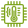

Dispositivo (borde)
Clientes web

ESP32thingesp32-26
MPU6050 · aceleración
DS18B20 · temperatura
ACS712 · corriente
Relé (GPIO26)ventilador 12 V
AWS IoT Corebroker MQTT
TLS mutuo · puerto 8883
TLS mutuo · puerto 8883
Regla de IoT
SELECT *, clientid(),
timestamp() FROM 'esp32/pub'
Isolation Forest + contador
STATE y PRED#…TTL 30 días · 10 RCU / 10 WCU
CORS · clave
X-Api-Key
Monitor weby gemelo digital 3D
1
esp32/pub · JSON cada ~2 s8
ON / OFF
esp32/subON / OFF
2
3invoca (asíncrono)
4guarda predicción
y último estado
y último estado
6lee
5GET /api/latest
/api/history
/api/history
7POST /api/command
7publica ON/OFF manual en
esp32/subOFF automático tras 3 anomalías seguidas (solo si
EnableRemoteShutdown=true)Amazon ECRimagen de la Lambda de inferencia
CloudWatch Logsregistros de ambas Lambdas
IAMroles de mínimo privilegio
(desplegado con AWS SAM)
(desplegado con AWS SAM)